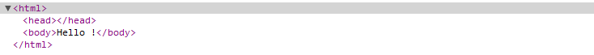

Application web
Nous allons utiliser notre projet et nos services afin de construire une application web.
Avec maven, il faut peu de choses afin de transformer notre application.
Packaging war
La première étape consiste a changer le packaging dans le pom.
Actuellement, nous avons un packaging jar, nous passons en war.
<groupId>edu.ecm.blog</groupId> <artifactId>blog</artifactId> <packaging>war</packaging>
Maintenant, un mvn package essayera de construire une application web (war).
src/main/webapp
La seconde étape consiste à rajouter le répertoire qui contiendra les ressources web : src/main/webapp.
Dans l'application produite par maven, tous les fichiers présents dans ce répertoire seront à la racine de l'applicaiton et donc accesibles directement depuis l'interface http.
Le descripteur de déploiement
Le fichier web.xml décrit comment configurer l'application
Le conteneur lit ce fichier au moment du déploiement de l'application.
Ce fichier doit aller dans le répertoire WEB-INF de l'application web. Avec maven, il faut donc le mettre dans src/main/webapp/WEB-INF.
<?xml version="1.0" encoding="UTF-8" ?> <web-app xmlns="http://java.sun.com/xml/ns/javaee" xmlns:xsi="http://www.w3.org/2001/XMLSchema-instance" xsi:schemaLocation="http://java.sun.com/xml/ns/javaee http://java.sun.com/xml/ns/javaee/web-app_2_5.xsd" version="2.5"> <display-name>blog</display-name> </web-app>
Ce fichier ne dit pas grand chose : nous sommes en version 2.5 de la spécification des servlets et notre application s'appelle blog.
Avec ce fichier en place, on peut maitenant faire un mvn package et obtenir notre war, versionné, dans le répertoire target.
Plugin tomcat
A partir de là, il serait tout a fait possible de copier ce fichier dans le répertoire webapps de tomcat et de le démarrer.
Mais faire une copie à la main à chaque build est fastidieux.
Nous allons donc utiliser le plugin tomcat pour maven afin de nous faciliter la tâche.
Avec mvn tomcat:run, maven télécharge le plugin tomcat et ses dépendances et lance un serveur tomcat.
[INFO] Running war on http://localhost:8080/blog [INFO] Creating Tomcat server configuration at /path/to/projects/target/tomcat 18 juin 2011 16:14:19 org.apache.catalina.startup.Embedded start INFO: Starting tomcat server 18 juin 2011 16:14:19 org.apache.catalina.core.StandardEngine start INFO: Starting Servlet Engine: Apache Tomcat/6.0.29 18 juin 2011 16:14:20 org.apache.coyote.http11.Http11Protocol init INFO: Initializing Coyote HTTP/1.1 on http-8080 18 juin 2011 16:14:20 org.apache.coyote.http11.Http11Protocol start INFO: Starting Coyote HTTP/1.1 on http-8080
Le plugin vient avec sa propre version de tomcat pour le goal tomcat:run.
Notre application répond sur http://localhost:8080/blog/.
Elle a été déployée dans le contexte blog car par défaut, le plugin tomcat utilise le nom de l'application dans le pom.
Afin que notre application soit directement accessible à la racine, il faut paramétrer le plugin tomcat pour notre projet en ajoutant les lignes suivantes dans le pom.
<build>
<testResources>
<testResource>
<directory>${basedir}/src/test/java</directory>
<includes>
<include>**/*.xml</include>
</includes>
</testResource>
</testResources>
<plugins>
<plugin>
<groupId>org.codehaus.mojo</groupId>
<artifactId>tomcat-maven-plugin</artifactId>
<version>1.1</version>
<configuration>
<path>/</path>
</configuration>
</plugin>
</plugins>
</build>
Maintenant notre application répond sur la racine (/). Mais comme nous n'avons aucun composant configuré, nous avons une 404.
Servlet API
L'API des servlets est un ensemble de classes java disponibles dans un conteneur de servlets.
Tomcat va donc nous fournir toutes ses classes afin que l'on puisse répondre aux requêtes http.
Cependant, dans eclipse, ces classes ne sont pas disponibles au moment de l'écriture du code source.
Il faut donc ajouter cette api dans notre pom.
<!-- provided by the container -->
<dependency>
<groupId>javax.servlet</groupId>
<artifactId>servlet-api</artifactId>
<version>2.5</version>
<scope>provided</scope>
</dependency>
<dependency>
<groupId>javax.servlet</groupId>
<artifactId>jsp-api</artifactId>
<version>2.0</version>
<scope>provided</scope>
</dependency>
HelloWorldServlet
Il est donc temps de rajouter notre premier composant web.
Afin d'accueillir nos servlets, nous ajoutons un package edu.ecm.blog.web.servlet.
Et notre première servlet.
package edu.ecm.blog.web.servlet;
import java.io.IOException;
import javax.servlet.ServletException;
import javax.servlet.http.HttpServlet;
import javax.servlet.http.HttpServletRequest;
import javax.servlet.http.HttpServletResponse;
public class HelloWorldServlet extends HttpServlet {
private static final long serialVersionUID = 1L;
@Override
protected void doGet(HttpServletRequest request, HttpServletResponse response)
throws ServletException, IOException {
response.getWriter().write("Hello !");
}
}
C'est un composant java qui peut répondre à une requête http et produire une réponse.
Il faut ensuite configurer le mapping dans le web.xml
<servlet> <servlet-name>HelloWorldServlet</servlet-name> <servlet-class>edu.ecm.blog.web.servlet.HelloWorldServlet</servlet-class> </servlet> <servlet-mapping> <servlet-name>HelloWorldServlet</servlet-name> <url-pattern>/HelloWorldServlet</url-pattern> </servlet-mapping>
Si on relance le serveur tomcat, le service http://localhost:8080/HelloWorldServlet dit bonjour.
Les paramètres
Il est possible d'exploiter les paramètres depuis la servlet.
public class HelloWorldSerlvet extends HttpServlet {
private static final long serialVersionUID = 1L;
@Override
protected void doGet(HttpServletRequest request,
HttpServletResponse response)
throws ServletException, IOException {
String name = request.getParameter("name");
response.getWriter().write("Hello " + name + " !");
}
}
Ce qui donne en résultat sur http://localhost:8080/HelloWorldServlet?name=Steven.
Le redirect
On crée une seconde servlet, HelloWorldRedirectServlet, qui va faire un redirect vers HelloWorldSerlvet
public class HelloWorldRedirectServlet extends HttpServlet {
private static final long serialVersionUID = 1L;
@Override
protected void doGet(HttpServletRequest request,
HttpServletResponse response)
throws ServletException, IOException {
response.sendRedirect("HelloWorldServlet");
}
}
Avec la configuration du web.xml
<servlet> <servlet-name>HelloWorldRedirectServlet</servlet-name> <servlet-class>edu.ecm.blog.web.servlet.HelloWorldRedirectServlet</servlet-class> </servlet> <servlet-mapping> <servlet-name>HelloWorldRedirectServlet</servlet-name> <url-pattern>/HelloWorldRedirectServlet</url-pattern> </servlet-mapping>
Ce qui donne en résultat sur http://localhost:8080/HelloWorldRedirectServlet?name=Steven.
On peut voir le premier retour du serveur (302) sur le traceur de requête de Chrome.
On note aussi que le paramètre name est perdu dans la redirection.
Les sessions
On crée une servlet, HelloWorldSessionServlet, afin de stoquer le nom passé en paramètre en session.
public class HelloWorldSessionServlet extends HttpServlet {
private static final long serialVersionUID = 1L;
@Override
protected void doGet(...) ... {
String name = request.getParameter("name");
request.getSession(true).setAttribute("name", name);
response.getWriter().write("Stored " + name + " !");
}
}
Il faut écrire la déclaration et le mapping dans le web.xml.
...
La nouvelle servlet http://localhost:8080/HelloWorldSessionServlet?name=Steven.
Modifions notre première servlet afin qu'elle en profite
public class HelloWorldSerlvet extends HttpServlet {
@Override
protected void doGet(...) ... {
String name = request.getParameter("name");
if (name == null) {
name = (String) request.getSession(true).getAttribute("name");
}
response.getWriter().write("Hello " + name + " !");
}
}
Notre première servlet supporte l'absence de paramètre http://localhost:8080/HelloWorldServlet si la variable est en session.
Générer du HTML
Il est possible de faire du html depuis une servlet.
public class HelloWorldSerlvet extends HttpServlet {
@Override
protected void doGet(...) ... {
...
// response.getWriter().write("Hello " + name + " !");
PrintWriter writer = response.getWriter();
writer.write("<html><head></head><body>Hello " + name + " !</body></html>");
}
}
Le résultat sur http://localhost:8080/HelloWorldServlet donne un arbre DOM parfaitement formé.
Mais cette méthode est complètement inadaptée dès que la page web dépasse quelques lignes.
Les fichiers jsp
Nous avons mis du html dans du java. Dès que le code html à générer est un peu plus riche, nous mettons du java dans du html.
C'est le rôle des fichiers jsp de générer du html.
Au moment de générer le rendu, la servlet passe donc la main à une jsp.
public class HelloWorldSerlvet extends HttpServlet {
@Override
protected void doGet(...) ... {
...
request.setAttribute("name", request.getParameter("name"));
request.getRequestDispatcher("/WEB-INF/jsp/hello.jsp")
.forward(request, response);
}
}
Et le fichier hello.jsp dans le répertoire WEB-INF :
<%@ page language="java" contentType="text/html; charset=UTF-8" pageEncoding="UTF-8"%>
<!DOCTYPE html PUBLIC "-//W3C//DTD HTML 4.01 Transitional//EN" "http://www.w3.org/TR/html4/loose.dtd">
<html>
<head></head>
<body>Hello ${name} ! (from jsp file)</body>
</html>
Le résultat sur http://localhost:8080/HelloWorldServlet?name=Steven.
Les fichiers jsp sont compilés à la volée en fichiers java puis en bytecode (.class).
Un peu à l'image d'un fichier php, les fichiers jsp sont donc interprétés par le conteneur. Cela leur donne au moins une propriété intéressante : il n'est pas nécessaire de redémarrer le serveur tomcat afin qu'il prenne ne compte une modification.
Les tag files
Il est possible de factoriser du code jsp grâce aux tag files.
On ajoute le fichier hello.tag dans le répertoire WEB-INF/tags/widget.
<%@ tag language="java" pageEncoding="UTF-8"%>
<%@ attribute name="name" description="Name to display" required="true" type="java.lang.String" %>
Hello ${name} ! from tag
Ce qui nous autorise à faire l'appel suivant dans notre jsp.
<%@ page language="java" contentType="text/html; charset=UTF-8" pageEncoding="UTF-8"%>
<%@ taglib tagdir="/WEB-INF/tags/widget" prefix="widget" %>
<!DOCTYPE html PUBLIC "-//W3C//DTD HTML 4.01 Transitional//EN"
"http://www.w3.org/TR/html4/loose.dtd">
<html>
<head></head>
<body><widget:hello name="${name}" /></body>
</html>
Cela ressemble à définir de nouveaux tags html.
Les custom tags
Les tag files sont parfaits afin d'écrire du code jsp réutilisable.
Dans d'autres cas, le code à réutiliser contient davantage de logique que de html et coder en jsp deviennent inadapté.
Les custom tags sont un peu plus compliqués à mettre en place mais ils sont écrit en java.
On ajout le fichier test.tld dans WEB-INF/tld.
<?xml version="1.0" encoding="UTF-8" ?>
<taglib xmlns="http://java.sun.com/xml/ns/j2ee"
xmlns:xsi="http://www.w3.org/2001/XMLSchema-instance"
xsi:schemaLocation="http://java.sun.com/xml/ns/j2ee
web-jsptaglibrary_2_0.xsd" version="2.0">
<tlibversion>1.0</tlibversion>
<jspversion>2.0</jspversion>
<shortname>link</shortname>
<uri>http://edu.ecm.blog/test</uri>
<info>Test taglib</info>
<tag>
<name>hello</name>
<tagclass>edu.ecm.blog.web.tag.HelloTag</tagclass>
<body-content>empty</body-content>
<info>Prints name</info>
<attribute>
<name>name</name>
<required>true</required>
<rtexprvalue>true</rtexprvalue>
</attribute>
</tag>
</taglib>
Ensuite on ajoute la clase HelloTag.
public class HelloTag extends SimpleTagSupport {
private String name;
@Override
public void doTag() throws JspException, IOException {
getJspContext().getOut().print("Hello " + name + " from custom tag");
}
public void setName(String name) {
this.name = name;
}
}
Enfin on peut modifier notre fichier jsp.
<%@ page language="java" contentType="text/html; charset=UTF-8" pageEncoding="UTF-8"%>
<%@ taglib tagdir="/WEB-INF/tags/widget" prefix="widget" %>
<%@ taglib uri="http://edu.ecm.blog/test" prefix="test" %>
<!DOCTYPE html PUBLIC "-//W3C//DTD HTML 4.01 Transitional//EN" "http://www.w3.org/TR/html4/loose.dtd">
<html>
<head></head>
<body>
<widget:hello name="${name}" /><br>
<test:hello name="${name}" />
</body>
</html>
Custom tags et tag files sont des solutions complémentaires.
Les fichiers tld et les custom tags peuvent être facilement intégrés à des librairies (.jar) et donc être réutilisables entre plusieurs projets.
La gestion d'erreur
Le traitement d'un requête peut impliquer un nombre important d'objets et une erreur peut survenir à n'importe quel stade du traitement.

Par défaut, il est donc intéressant d'avoir un mécanisme générique, une sorte de filet, qui récupère toutes ces erreurs.
Actuellement, si on génère une erreur, on obtient la page d'erreur par défaut.
public class HelloWorldSerlvet extends HttpServlet {
@Override
protected void doGet(...) ... {
throw new NullPointerException("ups !");
}
}
Le résultat est assez sec http://localhost:8080/HelloWorldServlet
Une configuration simple du web.xml permet de traiter ce genre d'erreur.
<error-page> <error-code>500</error-code> <location>/WEB-INF/jsp/500.jsp</location> </error-page>
Et la jsp WEB-INF/jsp/500.jsp correspondant.
<%@ page language="java" contentType="text/html; charset=UTF-8" pageEncoding="UTF-8"%> <!DOCTYPE html PUBLIC "-//W3C//DTD HTML 4.01 Transitional//EN" "http://www.w3.org/TR/html4/loose.dtd"> <html> <head></head> <body>Erreur 500</body> </html>
Ce qui permettrait de produire une réponse mise en forme sur http://localhost:8080/HelloWorldServlet
Les filtres
Les filtres sont des composants qui interceptent les requêtes
Nous créons le filtre GuardFilter dans le package edu.ecm.blog.web.filter.
public class GuardFilter implements Filter {
@Override
public void doFilter(ServletRequest request, ServletResponse response,
FilterChain chain) throws IOException, ServletException {
try {
chain.doFilter(request, response);
} catch (Exception e) {
response.getWriter().write("got you !");
}
}
@Override
public void init(FilterConfig arg0) throws ServletException {
}
@Override
public void destroy() {
}
}
En prenant soin de modifier le web.xml.
<filter> <display-name>GuardFilter</display-name> <filter-name>GuardFilter</filter-name> <filter-class>edu.ecm.blog.web.filter.GuardFilter</filter-class> </filter> <filter-mapping> <filter-name>GuardFilter</filter-name> <url-pattern>/*</url-pattern> </filter-mapping>
Sur la requête http://localhost:8080/HelloWorldServlet, le filtre a intercepté l'erreur et répondu.
Les filtres sont très pratiques afin d'implémenter des problématiques transverses telles que la sécurité ou la libération de ressources.
Un exemple de librairie
javamelody est une librairie qui s'intègre à une application et permet de la monitorer.
Malheureusement, la librairie n'est pas disponible dans le repo maven central. Nous ajoutons donc des repositories comme indiqué dans la documentation javamelody
<repositories>
<!-- for javamelody -->
<repository>
<id>m.g.o-public</id>
<url>http://maven.glassfish.org/content/groups/public/</url>
<releases>
<enabled>true</enabled>
</releases>
<snapshots>
<enabled>false</enabled>
</snapshots>
</repository>
<!-- for jrobin -->
<repository>
<id>opennms-repo</id>
<name>OpenNMS Repository</name>
<url>http://repo.opennms.org/maven2</url>
<releases>
<enabled>true</enabled>
</releases>
<snapshots>
<enabled>false</enabled>
</snapshots>
</repository>
</repositories>
Et le jar dans les dépendances.
<dependency> <groupId>net.bull.javamelody</groupId> <artifactId>javamelody-core</artifactId> <version>1.29.1</version> </dependency>
Il ne reste plus qu'a configurer le filtre javamelody dans le web.xml.
<filter> <filter-name>monitoring</filter-name> <filter-class>net.bull.javamelody.MonitoringFilter</filter-class> </filter> <filter-mapping> <filter-name>monitoring</filter-name> <url-pattern>/*</url-pattern> </filter-mapping> <listener> <listener-class>net.bull.javamelody.SessionListener</listener-class> </listener>
Il existe quelques paramètres afin de configurer javamelody en fonction de son besoin.
Javamelody analyse tout ce qui se passe dans le serveur et est capable de fournir énormément d'information sur l'application.
Après quelques requêtes, on peut lire un rapport sur http://localhost:8080/monitoring.
Dans notre cas, nous avons peu de composants. Dans une application réelle, javamelody fournit des informations sur tous les services standards et les librairies les plus utilisées.